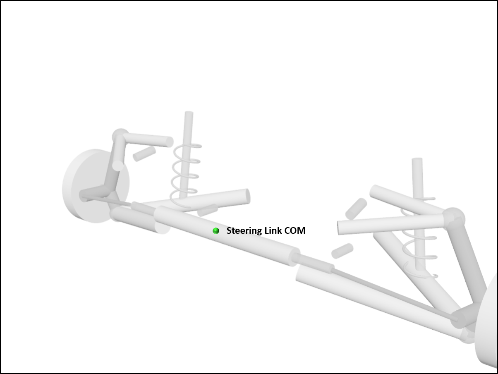
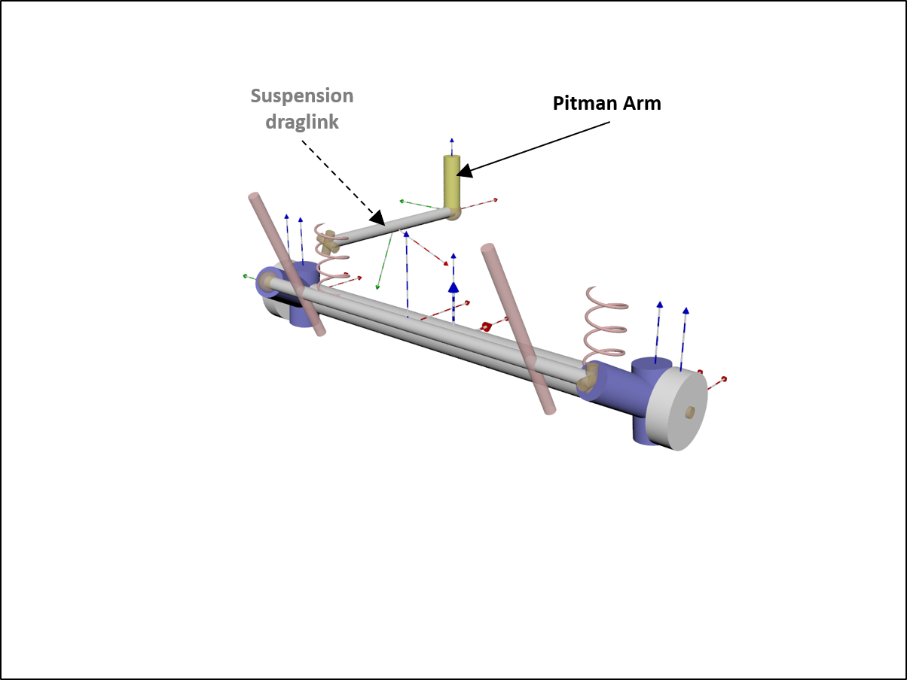
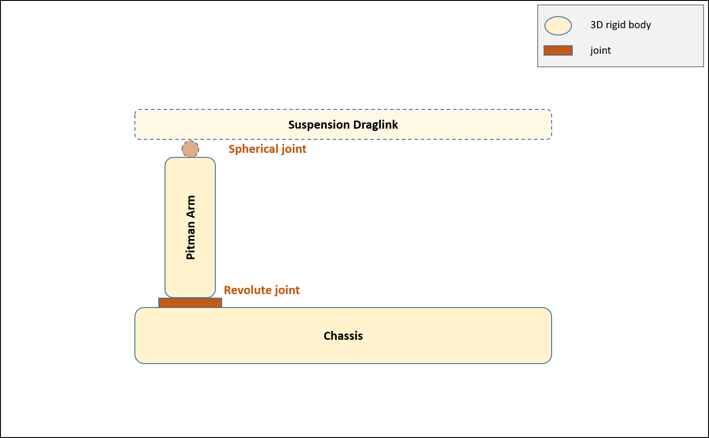

转向机构模型
基类 ChSteering 规定任何派生的转向机构类（转向机构模板）都应提供一个转向连杆体，可转向悬架可以与其连接（通常通过悬架的转向连杆）。
派生转向机构类型定义特定类型的转向机构的主体、关节、力元素和拓扑。所有位置均假定相对于机构参考系提供（派生转向机构类型可以自由选择此框架的位置和方向）。
通过指定机构组件参考系相对于底盘参考系的位置和方向（参见 ISO 参考系 的定义），将转向机构组件安装到车辆底盘上。
轮式车辆可能有多个转向机构，每个转向机构与不同的转向车轴相关联。同样，单个转向机构可以连接到多个转向车轴。
转向臂
该转向机构为四连杆机构，转向连杆体通过转向臂和惰臂与底盘相连。转向臂体通过万向节与转向连杆相连，通过旋转关节与底盘相连。驾驶员转向输入用于控制旋转关节的角度。在 Chrono::Vehicle 转向臂模板中，惰臂采用复合旋转球关节建模。
参见 ChPitmanArm 和 PitmanArm 。

本转向机构模板的拓扑结构为：

承力点如下：

具有 PitmanArm 转向机构规范的示例 JSON 文件如下：
{
"Name": "HMMWV Pitman Arm Steering",
"Type": "Steering",
"Template": "PitmanArm",
"Vehicle-Frame Inertia": false,
"Steering Link":
{
"Mass": 3.681,
"COM": [0.129, 0, 0],
"Moments of Inertia": [0.252, 0.00233, 0.254],
"Products of Inertia": [0, 0, 0],
"Radius": 0.03
},
"Pitman Arm":
{
"Mass": 1.605,
"COM": [0.064, 0.249, 0],
"Moments of Inertia": [0.00638, 0.00756, 0.00150],
"Products of Inertia": [0, 0, 0],
"Radius": 0.02
},
"Revolute Joint":
{
"Location": [0, 0.249, 0],
"Direction": [0, 0, 1],
"Maximum Angle (deg)": 30
},
"Universal Joint":
{
"Location": [ 0.129, 0.249, 0],
"Direction Arm": [0, 0, 1],
"Direction Link": [1, 0, 0]
},
"Revolute-Spherical Joint":
{
"Location Chassis": [0, -0.325, 0],
"Location Link": [0.129, -0.325, 0],
"Direction": [0, 0, 1]
},
"Tierod Locations":
{
"Pitman Side": [0.195, 0.448, 0.035],
"Idler Side": [0.195, -0.448, 0.035]
}
}
齿条齿轮
Chrono::Vehicle 齿条齿轮转向模板是齿条齿轮转向机构的运动学模型。转向连杆体通过棱柱关节连接到底盘。齿条位移计算如下：
d= r （α最大限度s )
其中r是小齿轮半径，α最大限度 是最大小齿轮角，并且s ∈ [ − 1 , 1 ]是驾驶员的转向输入。该位移用于控制转向连杆的平移。
参见 ChRackPinion 和 RackPinion 。

本转向机构模板的拓扑结构为：

受力点如下：

具有 RackPinion 转向机构规范的示例 JSON 文件如下：
{
"Name": "HMMWV Rack-Pinion Steering",
"Type": "Steering",
"Template": "RackPinion",
"Steering Link":
{
"Mass": 9.072,
"COM": 0,
"Inertia": [1, 1, 1],
"Radius": 0.03,
"Length": 0.896
},
"Pinion":
{
"Radius": 0.1,
"Maximum Angle (deg)": 50
}
}
旋臂
旋转臂转向是一种绕轴旋转的简单杠杆臂。它与实心摇臂轴和实心前束轴配合使用。它通常用作卡车、农用拖拉机和联合收割机的转向系统。
参见 ChRotaryArm 和 RotaryArm 。

本转向机构模板的拓扑结构为：

受力点如下：

具有 RotaryArm 转向机构规范的示例 JSON 文件如下：
{
"Name": "UAZBUS Rotary-Arm Steering",
"Type": "Steering",
"Template": "RotaryArm",
"Pitman Arm":
{
"Mass": 5.0,
"Inertia": [0.00638, 0.00756, 0.00150],
"Inertia Products": [0, 0, 0],
"Radius": 0.03,
"Axis of Rotation": [0, 1, 0], // arm-chassis revolute joint
"Point of Rotation": [0.6, 0.5325, 0.4], // location of chassis connection
"Point to Draglink": [0.6, 0.5325, 0.2], // location of draglink connection
"Maximum Angle (deg)": 12.5
}
}